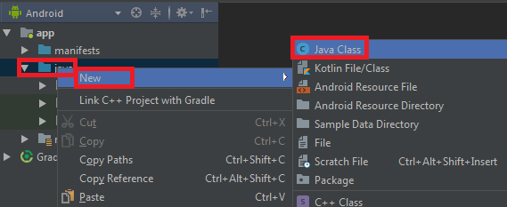
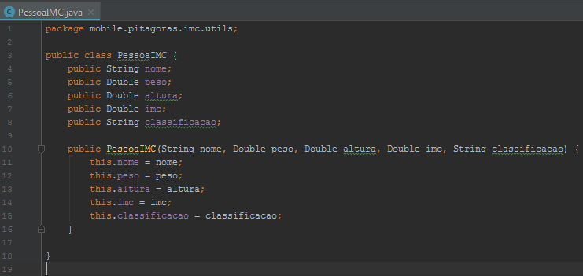
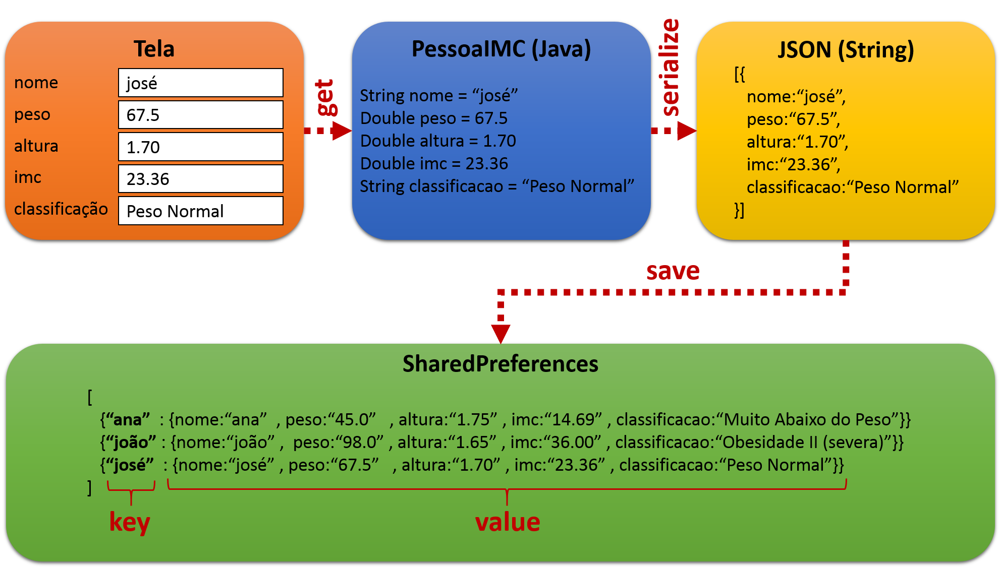
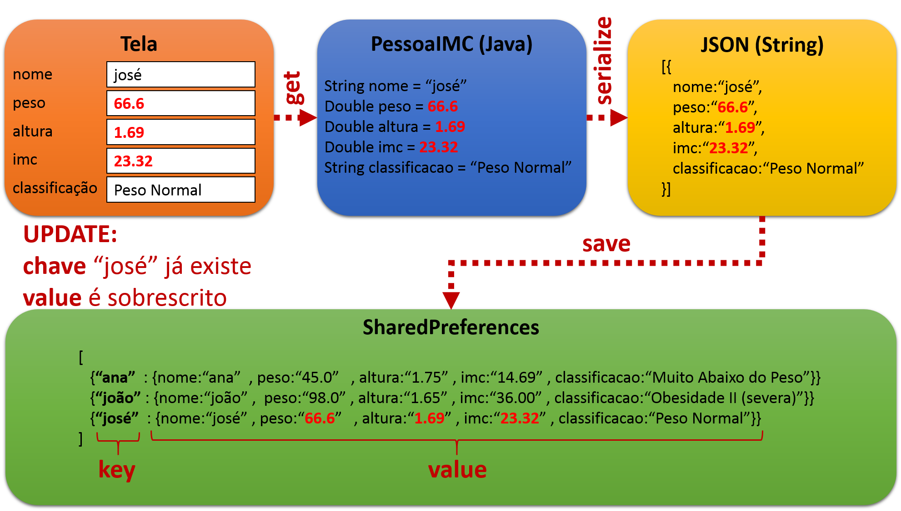
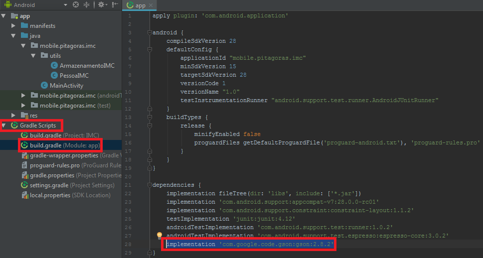
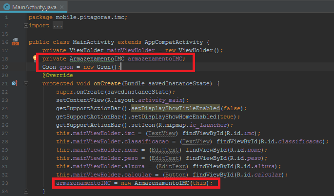
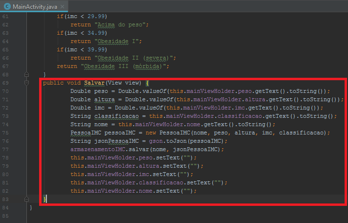
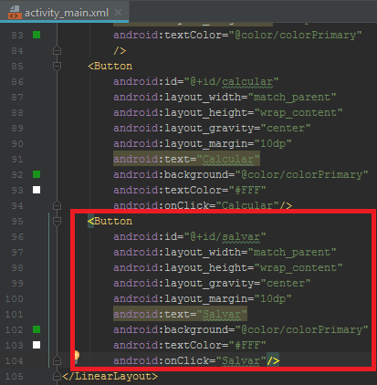

Prof. Dr. Raulcézar Alves
raulcezar@gmail.com
Salvando dados localmente
-
Shared Preferences
- salvar dados locais
- armazenar dados não voláteis, que não se alteram com frequência, como login do usuário no App
- dados que devem ter disponibilidade rápida
- não é indicado para armazenar grandes volumes de dados, para isso é necessário usar um bando de dados remoto
Salvando dados localmente
-
Shared Preferences
- armazena dados numa estrutura de hash com chave-valor (key-value)
- key: são identificadores para os dados, que não se repetem (não colidem), por exemplo, para salvar os dados de uma pesssoa o CPF poderia ser usado como key
- value: é a informação que se deseja salvar, podendo ser de vários tipos, como: int, float, Strings, booleans e sets de Strings
Salvando dados localmente
-
Shared Preferences
- para criar uma SharedPreferences é necessário passar um nome e um modo de funcionamento
- o nome define uma área de armazenamento dentro do App, como um esquema de banco de dados
- existem vários modos, o que utilizaremos é o privado que permite apenas nosso App ler e escrever
- uma vez criado, é possível armazenar dados na estrutura através de um PUT passando "key","value"
- para recuperar um dado basta utilizar o método GET passando "key" para se recuperar o "value"
Salvando dados localmente
-
Criar classe para gerenciar nosso SharedPreference
- utilizaremos SharedePreferences para armazenar dados de IMC de cada pessoa da família
- key: a chave será o nome da pessoa, digitada no campo Nome do App
- value: será armazenado o peso, altura, imc e classificação da pessoa
Salvando dados localmente
-
Criar classe para gerenciar nosso SharedPreference
- Botão direito na pasta java >> New >> Java Class

Salvando dados localmente
-
Criar classe para gerenciar nosso SharedPreference
- dar nome de "ArmazenamentoIMC" para a classe e salvar em um novo pacote .utils
Salvando dados localmente
-
Criar classe para gerenciar nosso SharedPreference
- instanciando um SharedPreferences
Salvando dados localmente
-
Criar classe para gerenciar nosso SharedPreference
- salvando key,value no SharedPreferences criado
Salvando dados localmente
-
Criar classe para gerenciar nosso SharedPreference
- buscando todos os dados do SharedPreferences
Salvando dados localmente
-
Classe PessoaIMC
- os dados que vamos armazenar no nosso SharedPreferences são referentes ao IMC de uma pessoa: nome, peso, altura, imc e classificação
- para armazenar esses dados de forma organizada, vamos criar mais uma classe dentro do pacote .utils que encapsula essas informações
- essa classe será chamada de PessoaIMC e terá os atributos: String nome, Double peso, Double altura, Double imc, String classificacao
- crie também um construtor com todos esses campos
Salvando dados localmente
Serialização
-
Armazenamento no SharedPreferences
- como vimos, SharedPreferences armazena key e value
- vamos usar o nome da pessoa como key
- value será um objeto da classe PessoaIMC com todos os dados dentro
- porém, SharedPreferences não armazena objetos do tipo PessoaIMC como value, apenas tipos como: int, float, Strings, booleans e sets de Strings
- para isso, vamos serializar o objeto e transformá-lo em um String JSON
Serialização
Serialização
Serialização
-
Adicionando biblioteca para serialização
- abra o arquivo Gradle Scripts >> build.gradle (Module: app)
- adicione implementation 'com.google.code.gson:gson:2.8.2' nas dependências
- salve e compile para forçar o download
- após isso, será possível utilizar métodos de serialização e deserialização nas classes java
Serialização
Salvando dados
-
Modificar MainActivity.java
- declarar ArmazenamentoIMC para utilizar métodos de salvar e buscar dados da SharedPreferences
- declarar Gson para serializar e deserializar dados da SharedPreferences
- no método onCreate inicialize ArmazenamentoIMC passando this como contexto
Serialização
Salvando dados
-
Modificar MainActivity.java
- criar método Salvar que faça:
- 1) recuperar todos os dados da tela: nome, peso, altura, imc e classificação
- 2) instanciar um objeto da classe PessoaIMC e colocar todos esses dados dentro
- 3) serializar esse objeto para uma String JSON
- 4) salvar na SharedPreferences
- 5) limpar os campos
Serialização
Salvando dados
-
Modificar activity_main.xml
- adicionar mais um botão na tela que chama o método Salvar